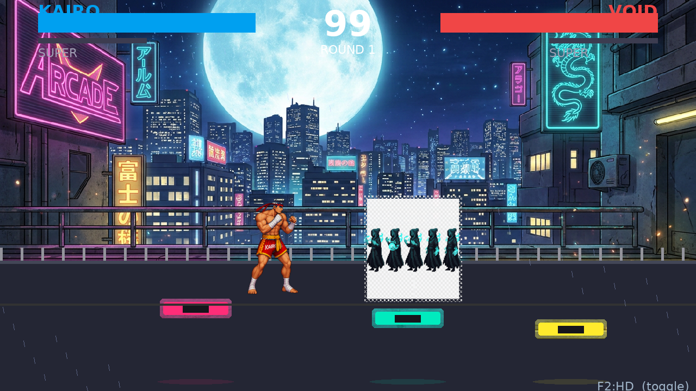
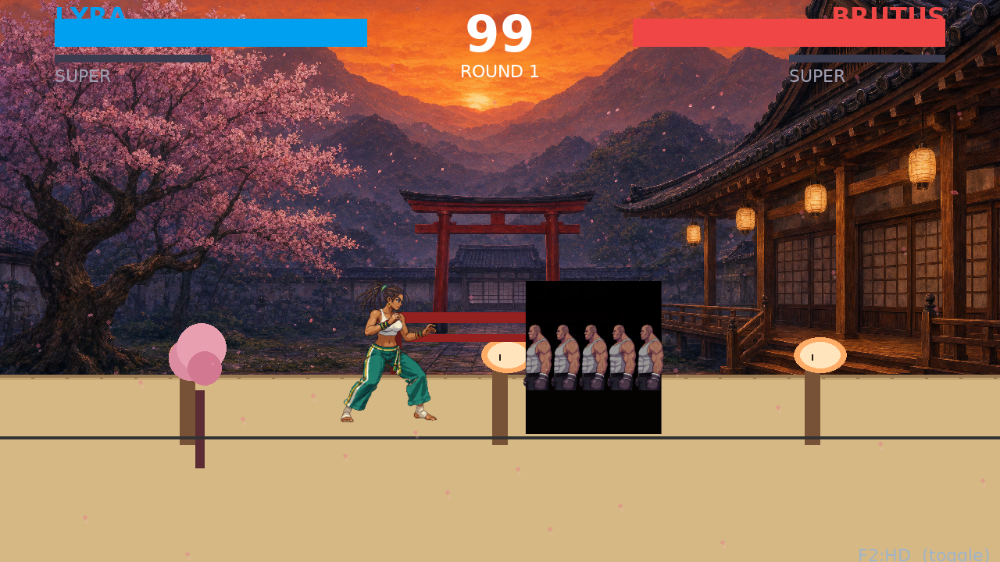
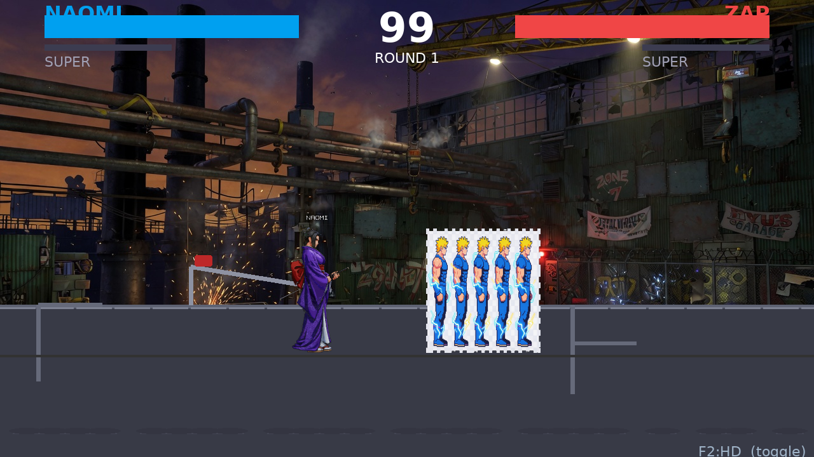

These 3 new fights are recorded locked to HD mode with your selected AI sheets (KAIRO / LYRA / NAOMI / BRUTUS / VOID / ZAP) — every move (walk/jump/lp/hp/lk/hk/block/hit/throw/special/super) now uses the full 192×256 HD sheet (was 96×128). Old placeholder videos were 2-4K per move → new sheets are 44-304K. Compare screenshots/hd_true_fight*.mp4 to old hd_fighter_fight*.mp4.
HD detail to look for: KAIRO's gi texture, LYRA's hair, fireball trail, rooftop parallax bg (1.5M HD). Pause on punches — no pixel blockiness.
Temple stage 1.9M HD bg, NAOMI katana slash vs BRUTUS grapple. Hitstop white flash + screen shake on heavy.
Industrial 1.7M bg, elecball vs void portal. Closest camera (360 vs 920) so 192×256 fills screen.
Frame-frozen on HP active / HIT so you can see brush texture vs old procedural.

KAIRO HP → VOID HIT — Temple 192×256


Old low-quality videos for comparison (still in folder): videos.html (30fps, 2-3MB, half-placeholder sheets) • New: 60fps, 9-14MB, 100% HD sheets
Press F2 in-game to toggle CLASSIC (96×128 procedural) ↔ HD (192×256 AI) — HUD shows mode.